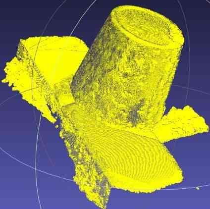
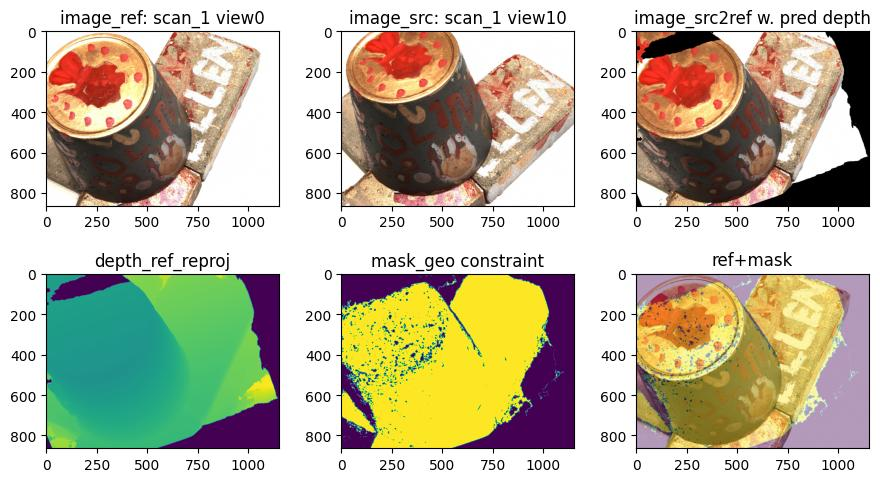

Table of contents
(Feature image is from: CasMVSNet_pl)
Restoring point cloud: Fuse depth maps of multi-views, and then unproject the depth map to 3D points.
MVSNet-PyTorch
Source code: MVSNet-PyTorch
-
Download pretrained model checkpoint
1gdown 1j2I_LNKb9JeCl6wdA7hh8z1WgVQZfLU9 -O ./checkpoints/pretrained/MVSNet-Pytorch_model_000014.ckpt -
Download preprocessed testing data of MVSNet
1 2gdown 135oKPefcPTsdtLRzoDAQtPpHuoIrpRI_ -O /data2/zichen/MVSNet_testing_dtu.zip unzip /data2/zichen/MVSNet_testing_dtu.zip -d /data2/zichen/MVSNet_testing -
Modify data paths in
eval.sh, and uncomment the line#302:save_depth()in “eval.py” to generate depth map first. And then run the script:./eval.sh.This program requires 15GB VRAM. so 1080Ti can’t run it.
-
The resolution of the test images (3x1184x1600; Feat map: 32x296x400) is too high to be processed by 1080Ti with 11 GB VRAM.
When processing the 2nd source view, OOM occurs at:
1 2 3warped_src_fea = F.grid_sample( src_fea, grid.view(batch, num_depth * height, width, 2), mode='bilinear', padding_mode='zeros') -
(2024-02-23) If executing the
eval.pywith the training images, the Datasetdata_yao_evalmay be mismatched with the training data folder.
-
-
Visualization: “outputs/mvsnet001_l3.ply”

There are noise point around the round edge of the bowl.
-
Use Matlab to compute the quantitative Metrics:
The DTU dataset (“DTU_SampleSet.zip”) provides the “Matlab evaluation code/” to assess the quality of point clouds.
Based on the SampleSet directory structure:
1 2 3 4 5 6 7 8 9 10 11(base) yi@yi:~$ tree /mnt/data2_zichen/SampleSet/ -d -L 2 /mnt/data2_zichen/SampleSet/ ├── Matlab evaluation code │ └── MeshSupSamp_web └── MVS Data ├── Calibration ├── Cleaned ├── ObsMask # 3D parts used for evaluation ├── Points # ground truth point clouds for each scan ├── Rectified └── Surfaces # Poisson reconstruction-
To evaluate point clouds of all scans, the folder “Points” needs to be replaced with the full version “Points/”.
Create a symbolic link
PointsinSampleSet/MVS Datafor the folderPoints/:1 2ln -s Points/ SampleSet/MVS\ Data/Points # Or: ln -s Points/ SampleSet/MVS\ Data/
Modify the paths and specify the scan to be evaluated in the matlab code:
1 2 3 4 5 6 7 8% ground-truth data: dataPath='/mnt/data2_zichen/SampleSet/MVS Data'; % the dir storing testing .ply files: plyPath='/mnt/Server/Downloads/MVSNet_pytorch-comments/outputs/pretrained'; % .mat fill will be saved here: resultsPath='/mnt/Server/Downloads/MVSNet_pytorch-comments/outputs/pretrained'; - - - UsedSets=[1]Run
BaseEvalMain_webin matlab:Output
1 2 3 4 5 6 7 8 9 10 11 12 13 14 15 16 17 18 19 20 21 22 23 24 25>>> BaseEvalMain_web cSet = 1 DataInName = '/mnt/Server/Downloads/MVSNet_pytorch-comments/outputs/pretrained/mvsnet001_l3.ply' EvalName = '/mnt/Server/Downloads/MVSNet_pytorch-comments/outputs/pretrainedmvsnet_Eval_1.mat' /mnt/Server/Downloads/MVSNet_pytorch-comments/outputs/pretrained/mvsnet001_l3.ply ans = 19 14 Elapsed time is 58.298360 seconds. downsample factor: 1.6901 Elapsed time is 18.930595 seconds. Computing Data 2 Stl distances Elapsed time is 83.304838 seconds. Computing Stl 2 Data distances Distances computed Elapsed time is 42.517009 seconds. Saving results Elapsed time is 42.864935 seconds. Elapsed time is 52.741538 seconds. ans = 19 18 mean/median Data (acc.) 0.254528/0.180807 mean/median Stl (comp.) 0.254594/0.218734- The samller the values, the better.
-
CasMVSNet-pl
(2024-02-23)
Source code: CasMVSNet_pl - AIkui
Environment
-
Depth_raw:
The MVSNeRF inherited some codes of this repo, thus, in MVSNeRF’s training dataset, the directory “Depths/” under “mvs_training/dtu/” is also replaced with the folder “Depths/” unzipped from “Depth_raw.zip”
-
Create environment:
(2024-04-04)
1 2 3 4conda create -n casmvsnet_pl python=3.8 conda activate casmvsnet_pl pip install torch==1.12.0+cu116 torchvision==0.13.0+cu116 --extra-index-url https://download.pytorch.org/whl/cu116 pip install -r requirements.txt- Python version:
Environment
casmvsnet_plrequires python 3.7 for pytorch 1.4.0, and the packages listed inrequirements.txt. If using python 3.10, the available pytorch version is higher than 1.11.
(2024-04-07)
-
Env on Ubuntu 22.04 ctk-11.6 in China:
1 2 3 4conda create -n casmvsnet_pl python=3.8 # pip always breaks when downloading torch. conda install pytorch==1.12.0 torchvision==0.13.0 cudatoolkit=11.6 -c pytorch -c conda-forge pip install -r requirements.txt # comment torch entriesI cannot compile inplace-abn via pip with erros:
1 2 3 4 5 6 7 8 9 10 11 12 13 14 15 16 17 18 19 20/home/zichen/anaconda3/envs/casmvsnet_pl/lib/python3.8/site-packages/torch/utils/cpp_extension.py:820: UserWarning: There are no g++ version bounds defined for CUDA version 11.6 warnings.warn(f'There are no {compiler_name} version bounds defined for CUDA version {cuda_str_version}') building 'inplace_abn._backend' extension gcc -pthread -B /home/zichen/anaconda3/envs/casmvsnet_pl/compiler_compat -Wl,--sysroot=/ -Wsign-compare -DNDEBUG -g -fwrapv -O3 -Wall -Wstrict-prototypes -fPIC -DWITH_CUDA=1 -I/home/zichen/Downloads/inplace_abn/include -I/home/zichen/anaconda3/envs/casmvsnet_pl/lib/python3.8/site-packages/torch/include -I/home/zichen/anaconda3/envs/casmvsnet_pl/lib/python3.8/site-packages/torch/include/torch/csrc/api/include -I/home/zichen/anaconda3/envs/casmvsnet_pl/lib/python3.8/site-packages/torch/include/TH -I/home/zichen/anaconda3/envs/casmvsnet_pl/lib/python3.8/site-packages/torch/include/THC -I/usr/local/cuda-11.6/include -I/home/zichen/anaconda3/envs/casmvsnet_pl/include/python3.8 -c src/inplace_abn.cpp -o build/temp.linux-x86_64-cpython-38/src/inplace_abn.o -O3 -DTORCH_API_INCLUDE_EXTENSION_H -DPYBIND11_COMPILER_TYPE=\"_gcc\" -DPYBIND11_STDLIB=\"_libstdcpp\" -DPYBIND11_BUILD_ABI=\"_cxxabi1013\" -DTORCH_EXTENSION_NAME=_backend -D_GLIBCXX_USE_CXX11_ABI=0 -std=c++14 cc1plus: warning: command-line option ‘-Wstrict-prototypes’ is valid for C/ObjC but not for C++ gcc -pthread -B /home/zichen/anaconda3/envs/casmvsnet_pl/compiler_compat -Wl,--sysroot=/ -Wsign-compare -DNDEBUG -g -fwrapv -O3 -Wall -Wstrict-prototypes -fPIC -DWITH_CUDA=1 -I/home/zichen/Downloads/inplace_abn/include -I/home/zichen/anaconda3/envs/casmvsnet_pl/lib/python3.8/site-packages/torch/include -I/home/zichen/anaconda3/envs/casmvsnet_pl/lib/python3.8/site-packages/torch/include/torch/csrc/api/include -I/home/zichen/anaconda3/envs/casmvsnet_pl/lib/python3.8/site-packages/torch/include/TH -I/home/zichen/anaconda3/envs/casmvsnet_pl/lib/python3.8/site-packages/torch/include/THC -I/usr/local/cuda-11.6/include -I/home/zichen/anaconda3/envs/casmvsnet_pl/include/python3.8 -c src/inplace_abn_cpu.cpp -o build/temp.linux-x86_64-cpython-38/src/inplace_abn_cpu.o -O3 -DTORCH_API_INCLUDE_EXTENSION_H -DPYBIND11_COMPILER_TYPE=\"_gcc\" -DPYBIND11_STDLIB=\"_libstdcpp\" -DPYBIND11_BUILD_ABI=\"_cxxabi1013\" -DTORCH_EXTENSION_NAME=_backend -D_GLIBCXX_USE_CXX11_ABI=0 -std=c++14 cc1plus: warning: command-line option ‘-Wstrict-prototypes’ is valid for C/ObjC but not for C++ /usr/local/cuda-11.6/bin/nvcc -DWITH_CUDA=1 -I/home/zichen/Downloads/inplace_abn/include -I/home/zichen/anaconda3/envs/casmvsnet_pl/lib/python3.8/site-packages/torch/include -I/home/zichen/anaconda3/envs/casmvsnet_pl/lib/python3.8/site-packages/torch/include/torch/csrc/api/include -I/home/zichen/anaconda3/envs/casmvsnet_pl/lib/python3.8/site-packages/torch/include/TH -I/home/zichen/anaconda3/envs/casmvsnet_pl/lib/python3.8/site-packages/torch/include/THC -I/usr/local/cuda-11.6/include -I/home/zichen/anaconda3/envs/casmvsnet_pl/include/python3.8 -c src/inplace_abn_cuda.cu -o build/temp.linux-x86_64-cpython-38/src/inplace_abn_cuda.o -D__CUDA_NO_HALF_OPERATORS__ -D__CUDA_NO_HALF_CONVERSIONS__ -D__CUDA_NO_BFLOAT16_CONVERSIONS__ -D__CUDA_NO_HALF2_OPERATORS__ --expt-relaxed-constexpr --compiler-options '-fPIC' -DTORCH_API_INCLUDE_EXTENSION_H -DPYBIND11_COMPILER_TYPE=\"_gcc\" -DPYBIND11_STDLIB=\"_libstdcpp\" -DPYBIND11_BUILD_ABI=\"_cxxabi1013\" -DTORCH_EXTENSION_NAME=_backend -D_GLIBCXX_USE_CXX11_ABI=0 -gencode=arch=compute_86,code=compute_86 -gencode=arch=compute_86,code=sm_86 -std=c++14 /home/zichen/anaconda3/envs/casmvsnet_pl/lib/python3.8/site-packages/torch/include/c10/core/SymInt.h(84): warning #68-D: integer conversion resulted in a change of sign /usr/include/c++/11/bits/std_function.h:435:145: error: parameter packs not expanded with ‘...’: 435 | function(_Functor&& __f) | ^ /usr/include/c++/11/bits/std_function.h:435:145: note: ‘_ArgTypes’ /usr/include/c++/11/bits/std_function.h:530:146: error: parameter packs not expanded with ‘...’: 530 | operator=(_Functor&& __f) | ^ /usr/include/c++/11/bits/std_function.h:530:146: note: ‘_ArgTypes’ error: command '/usr/local/cuda-11.6/bin/nvcc' failed with exit code 1Then, I tried to install it through compiling the source code. Unfortunately, the same error ocurred.
I compiled the source code on Ubuntu 20.04 and ctk-11.6 (I had created a same conda env using the above 2 lines. When using the
pip installmanner, it will find the previous cache of the inplace-abn package on the machine.). Superisingly, the compilation suceeded.The crucial difference between the 2 trials could be the gcc version
gcc --version. Their return values are:1 2 3gcc (Ubuntu 9.4.0-1ubuntu1~20.04.2) 9.4.0 gcc (Ubuntu 11.4.0-1ubuntu1~22.04) 11.4.0After I changed to gcc-9 on Ubuntu 22.04, the compilation for inplace-abn succeeded.
-
I was reminded to check
gccdue to ChatGPT’s response (prompted with the above error), and the issuse CUDA version (12.1) #232 and this issue asked gcc: failed install #143 -
There is another solution: inplace_abn安装报错？来看看这篇避坑指南吧！ But I didn’t try it.
How to change gcc version:
Ref: How to switch between multiple GCC and G++ compiler versions on Ubuntu 22.04 LTS Jammy Jellyfish
-
There are multiple gcc versions under
/usr/bin/.But, they didn’t show up:
1 2(casmvsnet_pl_) z@homepc:~/Downloads/inplace_abn$ update-alternatives --list gcc update-alternatives: error: no alternatives for gcc -
Install GCC 9:
sudo apt-get install gcc-9 g++-9. -
It’s said the 2 lines below are creating list for multiple gcc and g++:
1 2sudo update-alternatives --install /usr/bin/gcc gcc /usr/bin/gcc-9 9 sudo update-alternatives --install /usr/bin/g++ g++ /usr/bin/g++-9 9But once I exectuted them, the
gcc --versionhas changed to gcc 9.5.0The gcc and g++ will revert to 11.4 by executing:
1 2sudo update-alternatives --install /usr/bin/gcc gcc /usr/bin/gcc-11 11 sudo update-alternatives --install /usr/bin/g++ g++ /usr/bin/g++-11 11(2024-05-13)
Install gcc-7
-
I want to use gcc-7 to compile PCL. I installed g++-7 as below, and specify it as default:
1 2 3sudo add-apt-repository ppa:ubuntu-toolchain-r/test sudo apt update && apt install g++-7 -y sudo update-alternatives --install /usr/bin/gcc gcc /usr/bin/gcc-7 60 --slave /usr/bin/g++ g++ /usr/bin/g++-7However, an error prompted when install g++-9, because it
can't be master1 2 3(base) yi@Alien:~$ sudo update-alternatives --install /usr/bin/gcc gcc /usr/bin/gcc-9 9 (base) yi@Alien:~$ sudo update-alternatives --install /usr/bin/g++ g++ /usr/bin/g++-9 9 update-alternatives: error: alternative g++ can't be master: it is a slave of gccSo, I use a one-line command similar to the above gcc-7:
1(base) yi@Alien:~$ sudo update-alternatives --install /usr/bin/gcc gcc /usr/bin/gcc-9 9 --slave /usr/bin/g++ g++ /usr/bin/g++-9(Ref: Update gcc alternatives in Ubuntu 18.04 - g++ cannot be slave of gcc)
-
-
Later, the versions can be chosen from a list:
sudo update-alternatives --config gcc
-
- Python version:
Environment
-
Not found GPU:
Although the Pytorch 1.4.0 (installed with
pip) was compiled with cuda 10.1 (download), the cudatoolkit (nvcc -V) on the PATH is not neccessary to match the cuda version.For example, with using the same conda environemnt, Alien-PC (Ubuntu 20.04) using cuda-11.6 and the lambda server (Ubuntu 18.04) using cuda-10.2 both can detect GPU and run.
The error:
torch.cuda.is_available()returnsFalsehere is not due to cuda, but my debug settings!!! Fuck!! the environment variableCUDA_VISIBLE_DEVICESinlaunch.jsonwas set to 6 for server, which should be 0 on my PC.
(2024-04-13)
-
Create an environment again on Lambda server: Ubuntu 18.04, cudatoolkit 11.6 (
nvcc -V), and gcc, g++ both are 7.5.0 (gcc -v)1 2 3 4 5 6 7 8 9 10(casmvsnet_pl_py38) z@lambda-server:~/Downloads/CasMVSNet_pl-comments$ g++ -v Using built-in specs. COLLECT_GCC=g++ COLLECT_LTO_WRAPPER=/usr/lib/gcc/x86_64-linux-gnu/7/lto-wrapper OFFLOAD_TARGET_NAMES=nvptx-none OFFLOAD_TARGET_DEFAULT=1 Target: x86_64-linux-gnu Configured with: ../src/configure -v --with-pkgversion='Ubuntu 7.5.0-3ubuntu1~18.04' --with-bugurl=file:///usr/share/doc/gcc-7/README.Bugs --enable-languages=c,ada,c++,go,brig,d,fortran,objc,obj-c++ --prefix=/usr --with-gcc-major-version-only --program-suffix=-7 --program-prefix=x86_64-linux-gnu- --enable-shared --enable-linker-build-id --libexecdir=/usr/lib --without-included-gettext --enable-threads=posix --libdir=/usr/lib --enable-nls --enable-bootstrap --enable-clocale=gnu --enable-libstdcxx-debug --enable-libstdcxx-time=yes --with-default-libstdcxx-abi=new --enable-gnu-unique-object --disable-vtable-verify --enable-libmpx --enable-plugin --enable-default-pie --with-system-zlib --with-target-system-zlib --enable-objc-gc=auto --enable-multiarch --disable-werror --with-arch-32=i686 --with-abi=m64 --with-multilib-list=m32,m64,mx32 --enable-multilib --with-tune=generic --enable-offload-targets=nvptx-none --without-cuda-driver --enable-checking=release --build=x86_64-linux-gnu --host=x86_64-linux-gnu --target=x86_64-linux-gnu Thread model: posix gcc version 7.5.0 (Ubuntu 7.5.0-3ubuntu1~18.04)The pytorch is not install separately, just using the requirements.txt as below. Git commit
1 2 3conda create -n casmvsnet_pl_py38 python=3.8 conda activate casmvsnet_pl_py38 pip install -r requirements.txt
Evaluation
Evaluation and Depth Map Fusion: evalutions/
-
Download pretrained model checkpoint
1 2 3 4mkdir -p ckpts wget https://github.com/kwea123/CasMVSNet_pl/releases/download/v1.0/exp2.zip -P ckpts/ unzip ckpts/exp2.zip -d ckpts/ wget https://github.com/kwea123/CasMVSNet_pl/releases/download/v1.0/_ckpt_epoch_10.ckpt -P ckpts/exp2 -
Specify testing data
-
I only left
scan9in “lists/test.txt” for a quick peek. -
The code has some path templates that don’t match the DTU testing data directory structure.
Code Modifications
File:
datasets/dtu.py,build_metas()(line #40-42):1 2 3pair_file = "pair.txt" # Make 49 * 22 testing pairs for scan in self.scans: # add `scan` into path with open(os.path.join(self.root_dir, scan, pair_file)) as f:File:
datasets/dtu.py,build_proj_mats(Line #58-59):1 2 3# all scans have the same cams, so hardcard 'scan1' here: proj_mat_filename = os.path.join(self.root_dir, 'scan1', f'cams/{vid:08d}_cam.txt')File:
datasets/dtu.py,__getitem__()(Line #165-166):1 2 3# Add `scan` into path: img_filename = os.path.join(self.root_dir, scan, f'images/{vid:08d}.jpg')File:
eval.py,read_image()(line #87):1 2if dataset_name == 'dtu': return cv2.imread(os.path.join(root_dir, scan, f'images/{vid:08d}.jpg'))File:
eval.py, (Line #352): set name format to align the matlab code (of the MVSNet_pytorch).1PlyData([el]).write(f'{point_dir}/scan{int(scan[4:]):03d}_l3.ply')
-
-
Execute
eval.py. (1080Ti is okay.)1CUDA_VISIBLE_DEVICES=5 python eval.py --root_dir /data2/zichen/MVSNet_testing/dtu -
Visualization:
Import the result point cloud “results/dtu/points/scan9.ply” into MeshLab:


casmvsnet mvsnet -
Some floaters will be exposed when looking at the point cloud from novel views.
-
CasMVSNet-pl has less noise points than MVSNet-pytorch.
-
-
Modify the paths in “BaseEvalMain_web.m” (of the MVSNet_pytorch):
1 2 3 4 5 6dataPath='/mnt/data2_zichen/SampleSet/MVS Data'; % GT plyPath='/mnt/Server/Downloads/CasMVSNet_pl/results/dtu/points'; % pred resultsPath='/mnt/Server/Downloads/CasMVSNet_pl/results'; % store .mat method_string='scan'; - - - UsedSets=[9]Output for scan9
1 2 3 4 5 6 7 8 9 10 11 12 13 14 15 16 17 18 19 20 21 22 23 24cSet = 9 DataInName = '/mnt/Server/Downloads/CasMVSNet_pl/results/dtu/points/scan009_l3.ply' EvalName = '/mnt/Server/Downloads/CasMVSNet_pl/resultsscan_Eval_9.mat' /mnt/Server/Downloads/CasMVSNet_pl/results/dtu/points/scan009_l3.ply ans = 0 35 Elapsed time is 412.622045 seconds. downsample factor: 5.5621 Elapsed time is 285.285496 seconds. Computing Data 2 Stl distances Elapsed time is 101.764399 seconds. Computing Stl 2 Data distances Distances computed Elapsed time is 106.225475 seconds. Saving results Elapsed time is 106.982512 seconds. Elapsed time is 126.089258 seconds. ans = 0 52 mean/median Data (acc.) 0.357586/0.229884 mean/median Stl (comp.) 0.304593/0.177679Evaluate point clouds of all testing scans with matlab and save outputs into
write.txtfor calculating the average performance:1 2 3 4 5 6 7 8 9 10 11 12import re import numpy as np means_acc = [] means_comp = [] with open("/mnt/Server/Downloads/MVSNet_pytorch-comments/evaluations/dtu/write.txt", "r") as file: for line in file.readlines(): if 'acc.' in line: means_acc.append( eval(re.findall('\d+\.\d+|\d+',line)[0]) ) elif 'comp.' in line: means_comp.append( eval(re.findall('\d+\.\d+|\d+',line)[0]) ) print(np.mean(means_acc), np.mean(means_comp))Output:
0.36399536, 0.36997940Results of every scan.
scans accuracy Completeness num pts 1 0.235012/0.177113 0.219228/0.176128 29.40M 4 0.267118/0.198705 0.376820/0.192314 23.06M 9 0.312725/0.196551 0.204539/0.169905 25.38M 10 23.63M 11 19.57M 12 21.47M 13 22.35M 15 26.06M 23 29.97M 24 24.95M 29 19.67M 32 22.06M 33 16.67M 34 28.18M 48 15.82M 49 19.90M 62 22.97M 75 18.60M 77 7.46 M 110 27.34M 114 0.223317/0.169992 0.249666/0.178679 31.52M 118 0.243320/0.183991 0.403758/0.195397 30.18M avg 22
(2024-04-03)
-
Visualization for scan1:
-
The aliasing: Moiré pattern (摩尔纹) resulted from insufficient sampling frequency is wave interference (波的干涉).
Wave interference is a characteristic of wave behaviors: when two waves encounters, they form a new wave?
-
Eval LLFF Data
(2024-04-15)
-
Convert LLFF dataset to the format of MVSNet.
Use Colmap to solve the LLFF images: Colmap Tutorial; Ytb (The camera poses in NeRF are also recovered by Colmap with imgs2poses), and then use the script colmap2mvsnet.py provided by MVSNet to obtain matched format.
Eavl T&T
(2024-05-25)
Dataset: Tanks and Temples
-
The F-score of the testing sets (without GT published) should be evaluated by submitting the point cloud (.ply) to their webpage. (Github)
-
From the leaderboard, the results of MVSNet and casmvsnet_pl can be found there.
-
3DGS shows the PSNR, rather than F-score.
-
-
The training sets have GT provided.
-
MVSNet Sec5.2 evaluates its f-score on the intermediate set (Family, Francis, Horse, Lighthouse, M60, Panther, Playground, Train) of T&T.
-
The
intermediate.ziponly contains .mp4 videos. -
N = 5, W = 1920, H = 1056 and D = 256
-
MVSNet 418 43.48 N.A. 55.99 28.55 25.07 50.79 53.96 50.86 47.9 34.69
-
-
CasMVSNet_pl is tested on T&T with the default parameter in eval.py.
- CasMVSNet_pl 296.25 55.09 N.A. 76.4 52.83 49.08 49.72 56.24 51.99 53.87 50.63
-
Point-MVSNet 390.50 48.27 N.A. 61.79 41.15 34.20 50.79 51.97 50.85 52.38 43.06 didn’t exhibit the T&T results in their paper.
Depth map fusion
(24/07/18) This paragraph has been revised in my thesis for fluency and including references.
Code: CasMVSNet_pl
(2024-03-06) (2024-07-08)
All 49 depth maps are used to produce the point cloud for a scan by default. The filtering is performed based on 10 neighboring source depth maps.
The photometric consistency removes the pixel whose value is lower than 0.8 on the probability map. The geometric consistency can be depicted as follows. The reference depth map is projected onto each source viewpoint, obtaining the corresponding coordinates on the source depth map. Equivalently, the source depth map is warped to the reference viewpoint. Then, the warped source depth map is projected back to the reference depth map. If the reprojected coordinates on the reference depth map are 1 pixel away from the original coordinates, and the difference between the depth at the reprojected and the original pixel coordinates on the reference depth map is smaller than 0.01 * original depth. The point associated with a pixel on the reference view is considered valid. If a pixel is finally marked as valid more than 3 times, it will be retained on the reference depth map.
Each reference depth map applies the above photometric and geometric consistencies given a source depth map, resulting in a masked reference depth map. All the masked reference depth maps are aggregated together and the average masked depth map is unprojected to form a point cloud for this reference view.
As a scan has a total of 49 images, the final point cloud is a combination of the 49 point clouds produced from each of these images.
\begin{algorithm}
\caption{Depth map filter and fusion}
\begin{algorithmic}
\FOR{view=1 \TO 49 (\texttt{args.max\_ref\_views})}
\STATE Read reference image to compute the average RGB
\STATE \COMMENT{Photometric consistency}
\STATE Read probability map for the reference image
\IF {Pixel prob $>$ 0.8}
\STATE mask\_conf = 1
\ENDIF
\STATE \COMMENT{Geometric consistency}
\FOR{src=1 \TO 10}
\STATE Warp src depth map to be seen from the ref view by \texttt{xy\_ref2src}
\STATE Reproject the warped dMap\_src onto dMap\_ref by \texttt{xy\_src2ref}
\IF {Pixel diff $<$ 1 pix \AND depth error $<$ 0.01}
\STATE mask\_geo = 1
\ENDIF
\ENDFOR
\STATE Average ref depth maps and images reprojected from src views
\STATE Unproject the mean ref depth map to point cloud in world space
\ENDFOR
\STATE Output 49 point clouds
\end{algorithmic}
\end{algorithm}
- Procedure description refer to paper MVSNet sec 4.2
(2024-05-16)
-
As long the predicted depth is accurate, warping the source view based on the homography will result in the same scale as the ref view.
Therefore, the same pixel coordinate on the warped src image and the ref image correspond to a same 3D point. In other words, the warped src view and the ref view can overlap.
Warping is done by sampling pixels from the source depth map according to the homography from the ref view to a src view.
The fused depth map of a ref view is the average of refined depth maps after applying the photometric and geometric constraints on each pair of the ref and a src view

Apply the final mask on the depth_est_averaged, then unproject pixels on dpeth map to world space.
Because there are 49 views for a scan, the output .ply file is a combination of 49 point clouds.

CasMVSNet depth map fusion process:
Plotting code snippet
|
|
-
With substituing the predicted depth into homography, the warped source image aligns with the reference image pretty much.
-
Seen from the valid-depth mask, some highlight spots are missed.
-
CasMVSNet-pl averaged the color of 10 source views that have performed homography transformation. (desc)
1 2image_refined_ = \ np.sum(image_src2refs, 0)/np.expand_dims((mask_geo_sum+1), -1)Whereas, MVSNet-pytorch only casts the color of the refernce view.
1color = ref_img[1:-16:4, 1::4, :][valid_points] # hardcoded for DTU dataset